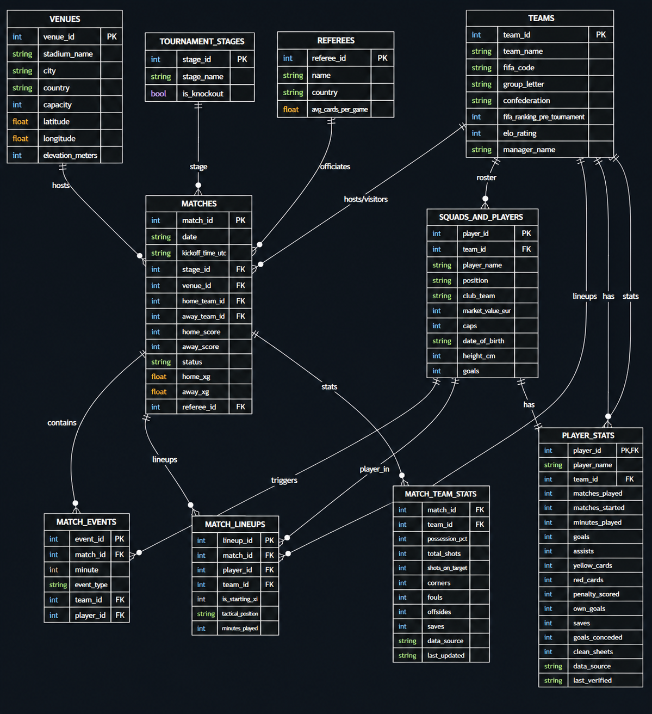

Most datasets are based on previous World Cup data, but this one is built with real-time, authentic data of the current FIFA World Cup 2026™ matches, which is updated daily as the tournament progresses.
Most datasets are built using historical or previous World Cup data, providing static archives that are no longer updated.
This dataset is built with real-time, authentic data from the current active World Cup matches, updated daily as the tournament progresses.
11 Normalized Tables • SQLite Ready • Foreign Keys • Production Ready

| Table Name | Primary Key | Key Foreign Keys | Description |
|---|---|---|---|
teams |
team_id |
- | Complete list of all 48 participating countries, FIFA codes, ELO ratings, and managers. |
venues |
venue_id |
- | Information on the 16 host stadiums, including city, capacity, coordinates, and elevations. |
matches |
match_id |
stage_id, venue_id, home_team_id, away_team_id, referee_id |
Match schedules, scorelines, expected goals (xG), and official referees. |
squads_and_players |
player_id |
team_id |
Comprehensive registry of all 1,248 players, club teams, market values, and international caps. |
match_events |
event_id |
match_id, team_id, player_id |
Minute-by-minute timeline of goals, assists, yellow/red cards, and VAR events. |
match_team_stats |
match_id, team_id |
match_id, team_id |
Per-team metrics: possession %, total shots, corners, saves, and fouls. |
match_lineups |
lineup_id |
match_id, player_id, team_id |
Tactical lineups detailing starting XIs, substitutes, and exact minutes played. |
player_stats |
player_id |
player_id, team_id |
Cumulative tournament player statistics (goals, assists, clean sheets, saves, etc.). |
Skip weeks of feature engineering. Train ML models immediately using ELO ratings, venue altitude, squad quality, rest days, and target labels.
Build prediction models with pre-match engineered features and historical trends.
Analyze performance, expected goals (xG), card counts, and team ELO ratings.
Normalized relational database perfect for database courses, portfolio joins & subqueries.
The first-choice dataset for Kaggle notebooks, university research assignments, sports analytics dashboards, and SQL portfolio practice.
Build real-world SQL projects using an 11-table normalized relational database with primary keys, foreign keys, and production-style relationships. Practice complex JOINs, CTEs, window functions, aggregations, ranking queries, and performance optimization while analyzing player statistics, match events, team performance, referees, stadiums, and tournament trends. Perfect for SQL portfolio projects, database management courses, and interview preparation.
Train machine learning models to predict Quarter-finals, Semi-finals, Final, match outcomes, scorelines, and expected goals (xG) using the included match_prediction_features.csv. The feature set already includes rolling team form, FIFA rankings, Elo ratings, squad quality, market value, rest days, venue altitude, and historical performance, allowing you to focus on model development instead of feature engineering.
Analyze how teams and players performed throughout the FIFA World Cup 2026 using detailed statistics such as possession, shots, expected goals (xG), passing, fouls, corners, cards, substitutions, and match events. Build dashboards, compare teams, discover performance trends, and generate insights for sports analytics, business intelligence, and football research projects.
Build AI-powered football assistants using structured tournament data. Create RAG applications, chatbots, match report generators, player search tools, and natural language analytics systems that answer questions about teams, players, fixtures, statistics, and tournament history using the relational dataset.
Learn how production sports datasets are built by exploring the complete ETL pipeline, automated validation scripts, SQLite database generation, and live update workflow. The project demonstrates data collection, normalization, feature engineering, quality checks, and continuous updates after every completed World Cup match.
Develop modern dashboards and web applications using Streamlit, Dash, Power BI, Tableau, or React. Visualize fixtures, live standings, player rankings, match events, team comparisons, xG trends, and tournament statistics through interactive charts, filters, and searchable interfaces.
Use the dataset for research on match prediction, expected goals (xG), player valuation, referee decisions, home advantage, venue altitude, rest-day effects, team rankings, and tournament performance. Suitable for undergraduate projects, master's research, sports analytics studies, and data science publications.
The included match_prediction_features.csv provides a ready-to-use machine learning dataset with engineered features including rolling form, xG averages, FIFA rankings, Elo ratings, squad quality, market value, venue altitude, rest days, and target labels. Simply load the CSV into Scikit-learn, XGBoost, LightGBM, CatBoost, or TensorFlow and begin training prediction models without spending hours on preprocessing.
Mentioned this dataset in his Instagram reel, highlighting its utility for SQL and data portfolio projects.
Post generated 728 social engagements, including 338 reactions, 337 saves, 21 comments, and 20 sends.
Featured in the "Analytics Jobs in Sports" newsletter on Substack, highlighting the dataset for sports analytics.
Included in the professional tournament research analysis covering preliminary World Cup matches.
"This dataset made my World Cup prediction project 1000x better. Having ELO ratings, transfer values, and elevations in a relational SQLite file saved me weeks of manual scraping."
Poisson Regression and Monte Carlo simulation forecasts trained on all completed tournament matches.
Skip the tedious feature engineering. Load match_prediction_features.csv directly into your Python models to predict the 2026 World Cup.
Most football databases only provide historical match details. This dataset contains 65 pre-calculated predictive features compiled for every match of the 2026 World Cup, including past matches and upcoming knockout fixtures.
import pandas as pd from xgboost import XGBClassifier # Load the ML-Ready dataset df = pd.read_csv("match_prediction_features.csv") # Split completed (1-100) and upcoming (101-104) train_df = df[df["match_id"] <= 100] predict_df = df[df["match_id"] > 100] # Select features and target labels features = ["home_elo", "away_elo", "home_fifa_rank", "away_fifa_rank", "home_squad_total_value_eur", "home_prev_avg_xg_scored", "away_prev_avg_xg_scored"] X_train = train_df[features] y_train = train_df["match_result"] # 'H', 'D', 'A' # Fit Model and Predict Semi-Finals clf = XGBClassifier() clf.fit(X_train, y_train) preds = clf.predict(predict_df[features]) print("Predictions:", preds)
Instant fetch-free preview of key tables directly from the relational database.
If you are using this dataset in a university assignment, research paper, publication, or sports analytics thesis, please cite it using the formats below.
Direct factual answers optimizing for AI search summaries and voice crawls.
The dataset is updated daily, immediately following the conclusion of each World Cup match. Updates include final scorelines, detailed team stats, expected goals (xG), minute-by-minute events, and player statistics.
No. We enforce a strict Data Integrity Policy: no synthetic or estimated match statistics are allowed. If verified data for a specific metric is temporarily unavailable, it remains empty (NULL) rather than filled with simulated stats.
Yes. The dataset is published under the Creative Commons Zero v1.0 Universal (CC0 1.0) license. It is in the public domain, meaning you can copy, modify, distribute, and perform the work, even for commercial purposes, without asking permission.
Yes. The database has been normalized into 11 tables with proper primary and foreign keys. This makes it perfect for SQL practice, Power BI / Tableau dashboards, or data engineering pipelines.
Start building your models, SQL analyses, and visualizations with the most complete and authentic FIFA World Cup 2026 dataset.